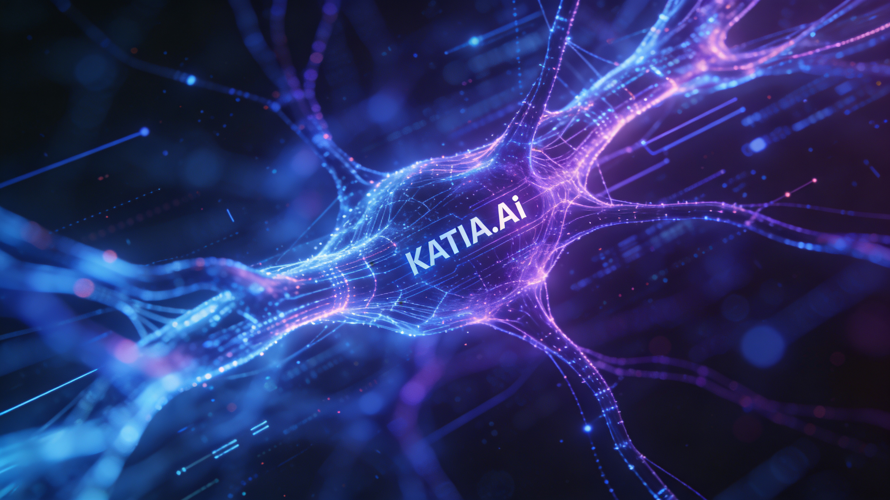
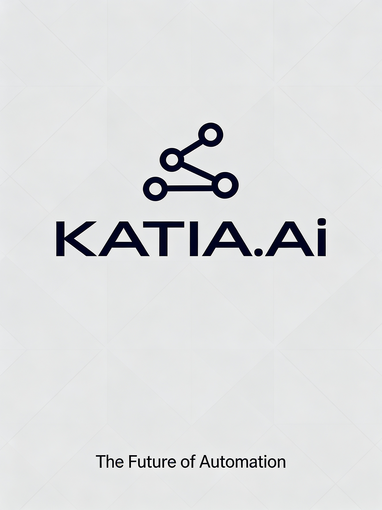
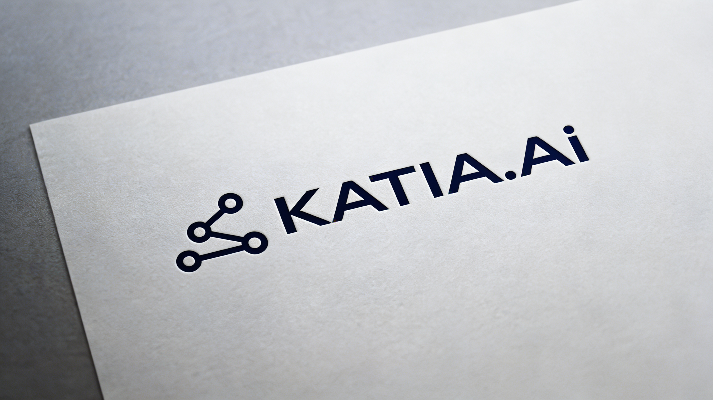
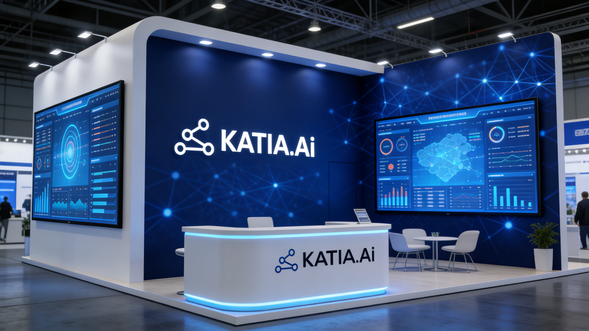
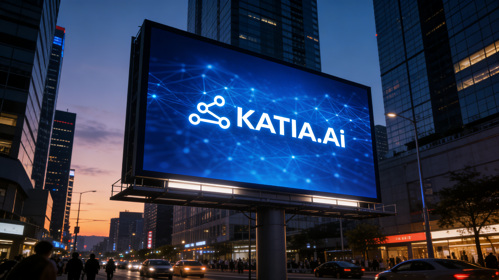

Automatizamos los procesos operativos, administrativos y contables de tu PYME con Inteligencia Artificial. Sin contratos largos. Sin complicaciones técnicas.
Sobre Nosotros
Somos una agencia de automatización con IA en Katy, Texas, creada para servir a la comunidad latina de Houston. Combinamos +30 años de experiencia como CPA con inteligencia artificial para eliminar el trabajo manual de tu PYME.
Ignacio Romero, CPA
Fundador y CEO
Contador Público con más de 30 años de experiencia en finanzas, administración y consultoría empresarial. Después de décadas ayudando a PYMEs latinas a organizar sus operaciones, Ignacio identificó un problema que nadie estaba resolviendo: los emprendedores hispanos en Texas no tenían acceso a herramientas de automatización en su idioma, con alguien que realmente entendiera su realidad de negocio.
Hoy lidera KATIA.ai combinando su experiencia contable y operativa con inteligencia artificial de última generación. Su visión es clara: que cada negocio latino en Houston tenga la misma tecnología que usan las grandes empresas — pero explicada en español, implementada por alguien que ha caminado en sus zapatos, y con resultados desde la primera semana.
Bajo su liderazgo, KATIA.ai ha desarrollado más de 50 flujos de automatización con IA que cubren ventas, marketing, contabilidad, soporte al cliente y operaciones — todo diseñado específicamente para las necesidades reales de las PYMEs latinas en Texas.
Nuestra Visión

Cuando fundamos KATIA.ai, vimos algo que nadie más estaba resolviendo: miles de emprendedores latinos en Houston trabajan 12 horas al día haciendo tareas que una máquina puede hacer en segundos. No porque no sean inteligentes — sino porque nadie les había dado las herramientas en su idioma, con alguien que entienda su negocio.
Nuestra visión es simple pero ambiciosa: que cada PYME latina en Texas tenga acceso a la misma tecnología de automatización que usan las grandes empresas. Sin necesidad de saber programar. Sin contratos eternos. Sin hablar inglés para recibir soporte técnico.
Combinamos inteligencia artificial con 30 años de experiencia contable real. No somos otro startup de Silicon Valley — somos tus vecinos en Katy, y entendemos lo que es levantar un negocio desde cero.


Nuestros Servicios
Tu presencia digital y tu contenido en redes son lo primero que ven tus clientes. Nosotros los construimos con IA — y después automatizamos todo lo demás.
Creamos la página web de tu negocio desde cero — moderna, rápida y optimizada para convertir visitantes en clientes. Diseño personalizado con formularios, WhatsApp integrado y SEO. No usamos plantillas genéricas.
La IA genera contenido personalizado para tu Instagram y Facebook cada semana — imágenes, captions, hashtags y programación automática. Tu marca siempre activa, sin invertir ni una hora.
Y cuando estés listo, automatizamos el corazón de tu negocio

03Formulario web 24/7, confirmaciones automáticas, dashboard admin y alertas en tiempo real.
Chatbot entrenado en tu negocio. Responde FAQs, califica leads y agenda citas 24/7.
Reportes automáticos, alertas de márgenes, QuickBooks y dashboard financiero.
Secuencias, confirmaciones, recordatorios y campañas automáticas.

07Google Sheets, QuickBooks, CRM, Stripe y calendarios conectados.
Flujos de aprobación, gestión documental, onboarding y procesos sin papel.
Nuestra Tecnología
Utilizamos N8N como plataforma exclusiva de workflows — la misma tecnología de empresas Fortune 500. Servidores en data centers de alta disponibilidad con monitoreo 24/7.
No necesitas entender la tecnología — tú ves los resultados: menos errores, más rapidez, y un dashboard en tiempo real.
KATIA.ai — Technology Expo Houston
Cómo Trabajamos
Metodología probada. Cero improvisación.
Mapeamos procesos e identificamos qué automatizar.
Flujo completo con plan de rollback.
Pruebas y demo antes de lanzar.
Lanzamiento supervisado y soporte mensual.
Casos de Éxito
Andy's Bakery — pastelería artesanal en Katy que perdía pedidos y tardaba 45 min por orden. En 72h construimos: formulario online, confirmaciones automáticas, dashboard con PIN, e Instagram con IA.
Resultado: cero pedidos perdidos, procesamiento en 3 min, 3 workflows activos 24/7.
Siguiente Paso
Diagnóstico gratuito de 30 minutos. Plan de acción sin costo ni compromiso.
📍 Katy, Texas · Respuesta en menos de 24 horas